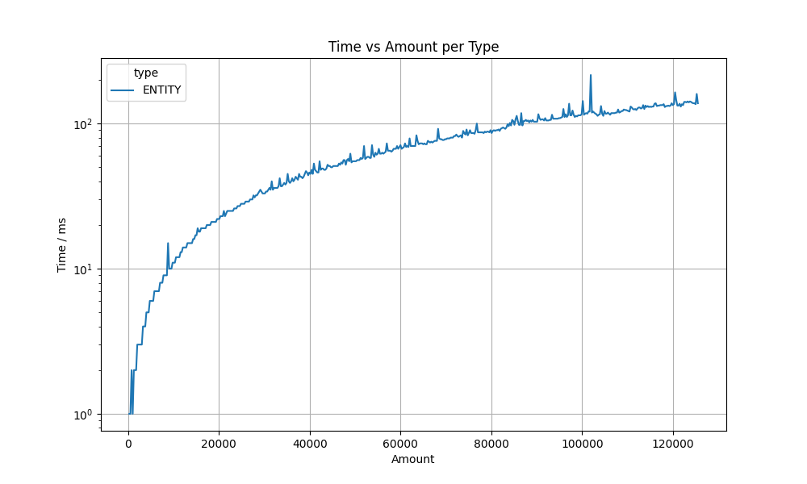

Hibernate ORM is a framework that provides a way to map object-oriented domain models to a relational database. As a powerful, high-performance Object/Relational Persistence and Query service, it allows developers to more easily write applications whose data outlives the application process. This repository is dedicated to exploring various features of Hibernate, with a focus on performance, the usage of soft references, and transactions.
This section delves into Hibernate's performance, discussing this topic based the Persistence Context which plays a key role in Hibernates functionality.
The Hibernate Persistence Context is a central component of Hibernate and plays a crucial role in dealing with entity objects - the instances of classes that represent database tables in a Java application. The Persistence Context serves as a kind of cache and management layer between the Java application and the database. A key point of the Hibernate Persistence Context is its function as a cache for the entity instances that are loaded or saved during a transaction. This cache reduces the number of database accesses required by reusing already loaded entities instead of reloading them from the database each time they are accessed. It also ensures that there is at most one entity instance for each database row within a session. If an entity is loaded multiple times, Hibernate returns the same instance instead of creating a new one. In combination with this, the Persistence Context is used to track changes to the managed entity instances. When a transaction is committed, these changes are automatically transferred to the database (flush). This makes it possible to collect changes to entities in a transaction and to persist them efficiently as a unit.
Another key functionality that is closely linked to the concept of the Persistence Context is the dirty check mechanism. It serves to increase efficiency when updating data in the database, but can also pose certain challenges. First of all, the dirty check mechanism enables Hibernate to automatically recognize which entities have been changed since the last read or save operation. This capability is central to the way the Persistence Context works, as it eliminates the need to manually track changes to entities or write explicit update statements for every small change. The focus is also on optimizing database operations. By recognizing changed entities, Hibernate can specifically write only the data that has actually been changed to the database. This minimizes the number of database operations and can improve performance by minimizing I/O, especially in applications with a high number of entities and transactions.
An often underestimated problem in connection with dirty checks is the loss of performance. Tracking changes and comparing states (to identify dirty entities) can itself consume resources. With a large number of entities or complex entity structures, the overhead of the dirty check can have a negative impact on application performance. Before solutions can be proposed, it is first necessary to understand when and under what circumstances Hibernate performs dirty checks. There are several scenarios in which Hibernate triggers a dirty check, but the most obvious and probably most common reason is the flush before the commit of a transaction.
Explore how Hibernate manages entity references through the use of the @Id annotation. This segment covers the mechanism Hibernate employs to link entities together, ensuring data integrity and facilitating easy data retrieval.
Managing transactions is crucial for the integrity of data. This part explores Hibernate's transaction management capabilities, including propagation, isolation, and how to handle transactions in different environments.